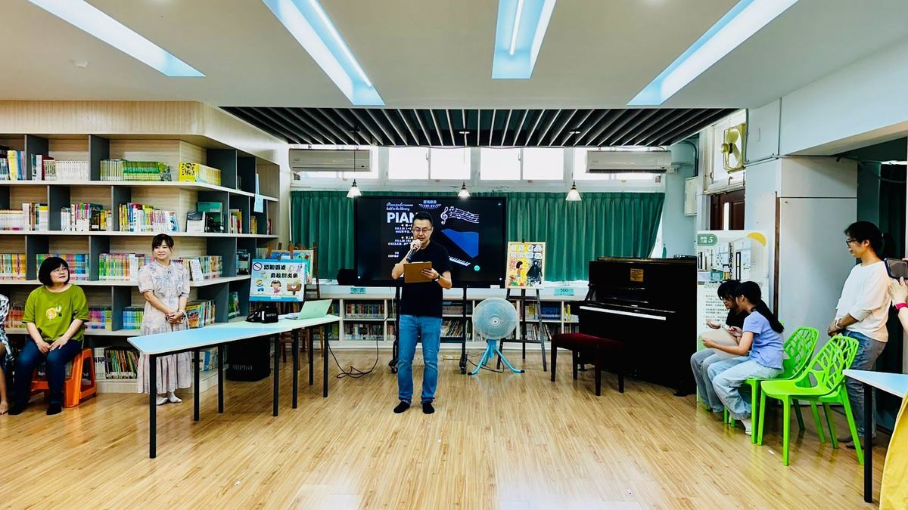
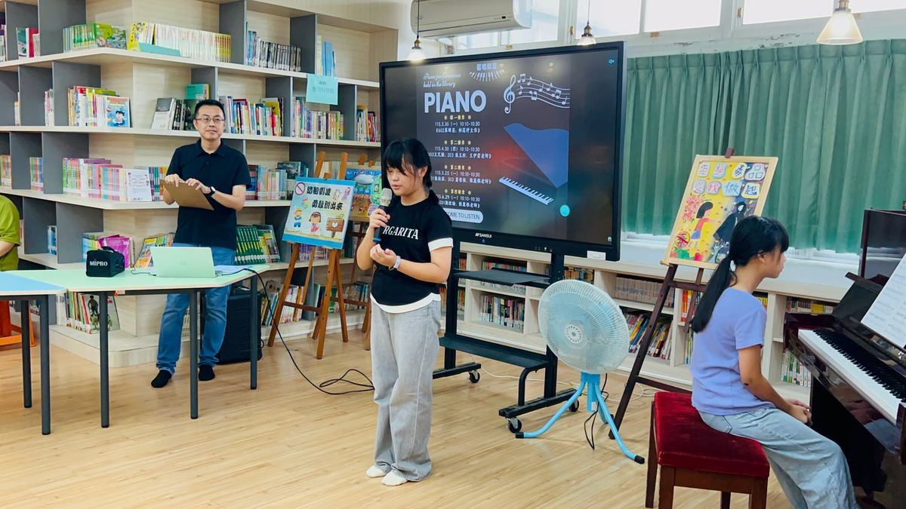

The fourth movement of the "Xin Ming Concert" — the grand finale of the school year — has arrived! This special concert series has been a highlight of the academic year at Hsinmin Elementary, bringing students, teachers, and families together through the power of music.
The fourth and final movement brought together performances that showcased the hard work, passion, and beautiful growth of every young musician across the school year. From the first note to the last, every performance was filled with heart and talent that filled the hall with warmth and joy.
Music has a way of connecting people and expressing what words cannot. As this chapter of the Xin Ming Concert closes, we carry with us the melody of every moment shared together. Thank you to every student, teacher, and family member who made this musical journey so unforgettable. Until next year! 🎵💜
🎵 馨鳴樂章第四樂章｜最終章，以愛謝幕 🎵
馨鳴樂章第四樂章，華麗登場！這場音樂系列演出是新民國小年度的年度重頭戲，透過音樂的力量，將學生、老師與家庭凝聚在一起，共同感受美好的時光。
最終章匯集了整個學年的努力、熱情與成長，從第一個音符到最後一聲謝幕，每一個演出都充滿了真心與才華，讓整個音樂廳洋溢著溫暖與喜悅。
音樂有一種奇妙的力量，能夠連結彼此，表達語言無法訴說的情感。隨著這一章節落幕，我們帶走的是每一個共同分享的旋律與回憶。感謝每一位同學、老師和家長，讓這段音樂旅程如此難忘。明年見！🎵💜
Words About Music & Performance英語學習角 · 和音樂與演出有關的小單字
Six key words from this story, each with an example sentence — then a five-question quiz. Tap 🔊 to listen.
六個關鍵字，每個字配一個例句，最後有五題小考。點 🔊 聽發音。
情境：兩位同學在馨鳴樂章最終章結束後互相交流感想。